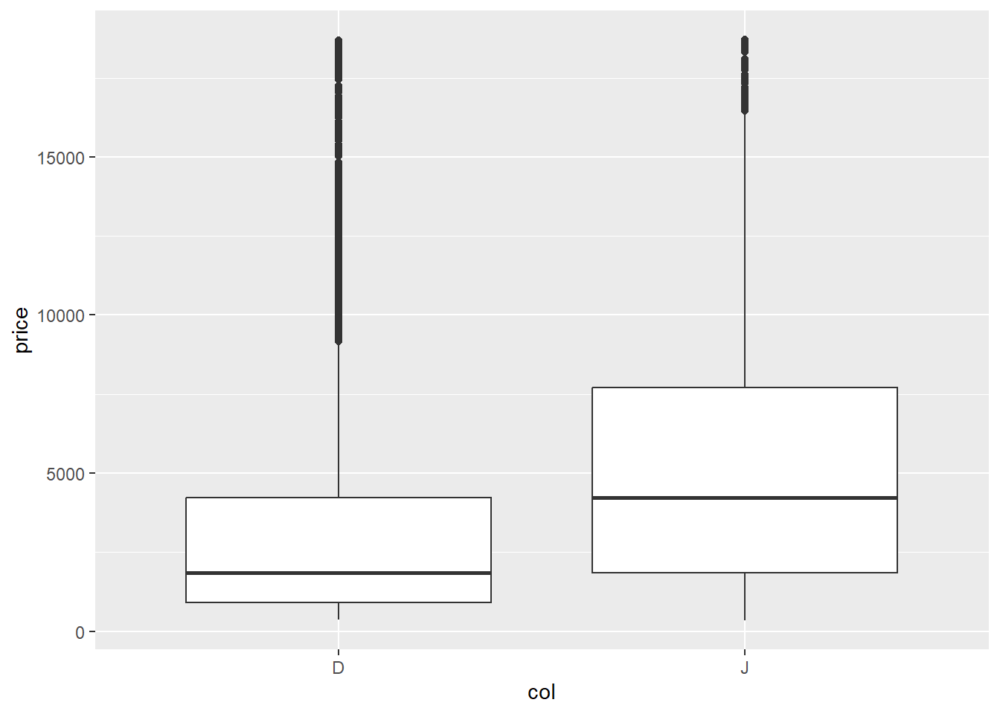

# Clear Workspace
rm(list = ls())
# load packages we typically use for this class.
library(mosaic)
library(ggformula)
library(Stat2Data)
library(tidyverse)Station 2: Exploratory Data Analysis (EDA) with R
A. Introduction
In this document you will be introduced to the functions we will use most frequently in this class. If you are moderate to advanced R user, feel free to use whatever functions you’d like to accomplish the tasks. The first part of this document contains explanations for beginning R users, but all students should work through the entire document.
Reminder:
In general, I suggest “rendering as you go”: rendering every few chunks, to make sure things are rendering correctly, rather than waiting until the end of a document to render the whole thing (and potentially encountering lots of errors that you have to unpack)! I also ALWAYS suggest “saving as you go”: it’s a good idea to save every couple of minutes. (This is good practice for all your files.)
TASK–Run the code below to set options for the document and load packages. Note that
#| warning: FALSEcauses the code to run without displaying any associated warnings when you render.
B. Data
Load data
Doing statistics requires data. R comes with many built-in datasets, and the packages you loaded above (specifically Stat2Data) give you access to even more. To load a dataset from within R you can use the data command:
TASK–Use the code below to load the dataset
diamonds, which is part of theggplot2package and included in thetidyverse.
data("diamonds")This is a great chance to remind you that R cares about letter case. This means that data("diamonds") and data("Diamonds") actually load different datasets! In this case, please make sure to load the lowercase letter diamonds dataset.
Inspecting the data source
Now you’re ready to learn a little bit about the diamonds data set.
# Inspecting the data source
glimpse(diamonds)Rows: 53,940
Columns: 10
$ carat <dbl> 0.23, 0.21, 0.23, 0.29, 0.31, 0.24, 0.24, 0.26, 0.22, 0.23, 0.…
$ cut <ord> Ideal, Premium, Good, Premium, Good, Very Good, Very Good, Ver…
$ color <ord> E, E, E, I, J, J, I, H, E, H, J, J, F, J, E, E, I, J, J, J, I,…
$ clarity <ord> SI2, SI1, VS1, VS2, SI2, VVS2, VVS1, SI1, VS2, VS1, SI1, VS1, …
$ depth <dbl> 61.5, 59.8, 56.9, 62.4, 63.3, 62.8, 62.3, 61.9, 65.1, 59.4, 64…
$ table <dbl> 55, 61, 65, 58, 58, 57, 57, 55, 61, 61, 55, 56, 61, 54, 62, 58…
$ price <int> 326, 326, 327, 334, 335, 336, 336, 337, 337, 338, 339, 340, 34…
$ x <dbl> 3.95, 3.89, 4.05, 4.20, 4.34, 3.94, 3.95, 4.07, 3.87, 4.00, 4.…
$ y <dbl> 3.98, 3.84, 4.07, 4.23, 4.35, 3.96, 3.98, 4.11, 3.78, 4.05, 4.…
$ z <dbl> 2.43, 2.31, 2.31, 2.63, 2.75, 2.48, 2.47, 2.53, 2.49, 2.39, 2.…head(diamonds)# A tibble: 6 × 10
carat cut color clarity depth table price x y z
<dbl> <ord> <ord> <ord> <dbl> <dbl> <int> <dbl> <dbl> <dbl>
1 0.23 Ideal E SI2 61.5 55 326 3.95 3.98 2.43
2 0.21 Premium E SI1 59.8 61 326 3.89 3.84 2.31
3 0.23 Good E VS1 56.9 65 327 4.05 4.07 2.31
4 0.29 Premium I VS2 62.4 58 334 4.2 4.23 2.63
5 0.31 Good J SI2 63.3 58 335 4.34 4.35 2.75
6 0.24 Very Good J VVS2 62.8 57 336 3.94 3.96 2.48names(diamonds) [1] "carat" "cut" "color" "clarity" "depth" "table" "price"
[8] "x" "y" "z" TASK: Edit the bullet list below to add a short description in your own words describing what each function does. Hint: if it isn’t clear based on the output you can use
?before the function name in the console to bring up the documentation on that function.
glimpse(): this function…head(): this function…names(): this function…
Some Data Prep
The following is a little bit of data wrangling to get the source data in shape for our purposes. You can ignore this part for now, and we can talk about it another time.
# Recode & filter (no edits needed - just run this chunk)
recoded <- # make a new dataset called recoded
diamonds |> # by starting with the diamonds data
filter(color=="D" | color=="J") |> # and filtering observations to keep only colors D and J
mutate(col = as.character(color)) # tell R some specifics about how to record the variable color.Basically, we’re going to do a bit of exploration of variables that impact cost of diamonds. Even if you haven’t used R before, you might be able to tell from the code that we started with the diamonds data, filtered (i.e. restricted) our data set to only include the diamonds that are either color D or J, created a new categorical variable called col, and stored the whole thing in a new data set called recoded.
Statisticians should always know something about the data domain in order to be useful. If you don’t know anything about the subject area you need to at least learn some basics. Wikipedia is usually a good place to start: https://en.wikipedia.org/wiki/Diamond_color.
C. Exploratory Data Analysis
For the purposes of our class, it’s useful to learn a model-centric approach to R. The psuedo-code below is going to be our foundation for the rest of the class:
function( Y ~ X, data = DataSetName )
Here’s a short description of each part in the pseudo-code above:
functionis an R function that dictates something you want to do with your data; for example,meancalculates the meant.testperforms a t-testlmfits a linear regression model
Yis the outcome of interest (response variable)Xis some explanatory variable; you can use1as a placeholder if there is no explanatory variableDataSetNameis the name of a data set loaded into the R environment
Always start with clear research questions. Our question for this exercise:
How do diamond prices compare for
DandJcolored diamonds?
The purpose of the exploratory data analysis (EDA) is to learn as much as you can about your research question before doing any statistical modeling. We basically want to try and answer the research question with EDA if possible…or at least have a guess as to what the answer “should” be. Then we use statistical models to formally accommodate variability in the data and calculate the uncertainty of our conclusions.
Mean price by color
Use the R code chunk below to calculate the mean price by color. Summarize your observations below the code chunk (under “TASK”). Don’t forget, we did some data wrangling above and made a new data set called recoded. Use the recoded data for the rest of this analysis.
mean(price ~ col, data = recoded) D J
3169.954 5323.818 TASK–Share your observations:
Other summary statistics by color
Of course, there are lots of other ways to summarize a numerical variable besides the mean. Use the R code chunk to calculate the other summary statistics for the price of each diamond color using favstats(). Summarize your observations below the code chunk. How do the prices compare between D diamonds and J diamonds?
TASK–Produce the required code:
(Hint: Do you not know how favstats works? Well, it’s a function just like any other: it follows the syntax described at the top of this section! Also, you can always find details and examples by searching the Help menu in the lower-right quadrant.)
TASK–Summarize your observations:
2-3 Basic plots of the data
Make side-by-side boxplots along with a scatterplot using the R code shown below.
TASK–Run the code to make a boxplot; then modify the 2nd bit of code to make the desired scatterplot:
# make a boxplot of price by color
gf_boxplot(price ~ col, data = recoded) 
# make a scatter plot of price versus carat
#gf_point(response ~ explanatory, data = recoded)TASK–Share your observations:
Multivariable relationships
The world is often too complicated to be understood by studying one or two variables at a time. Color is certainly not the only variable that impacts the value of a diamond. You may have noticed in the Wikipedia article that color is only one of the “4 C’s” that influence the value of a diamond.
Adjusting for other variables
Alter the pseudo-code below to create a scatter plot of price vs carat, which each plotted point colored according the color of the diamond it represents. Write a few sentences below the code chunk to explain what you’ve observed from this plot.
TASK–modify the code to produce the scatterplot:
#gf_point(response ~ explanatory1, color = ~ explanatory2, data = recoded)TASK–Share your observations:
D. US States Data Analysis
Use data from an outside source
It’s important to be able to download a file from an outside source and then load it in R for use. There are multiple ways to do this, but one is described in Station_1. If you don’t know how to do this, see Station_1 for instructions, or ask your partner.
TASK–Download the file
US_States_fall2021.csvfrom Canvas and load the data into your environment
Once the data is loaded into the Environment, that means it’s loaded in the Console, NOT this Quarto document! Make sure you copy the code that loaded it into the Console into the R chunk below. Call the data set state_data.
TASK–Use
head()andglimpse()to explore the format of the data a bit:
This data has one row for each of the 50 U.S. states, and each variable is recorded for the entire state. For example, that variable HeavyDrinkers gives the percentage of residents in a state that are heavy drinkers. According to these data 5.9% of Pennsylvania residents are heavy drinkers.
TASK–Refer to the US States Merged Data codebook (also on Canvas) and select some variables of interest:
You can choose whatever variables you want. You will explore these variables (and relationships between them) in Stations 2 and 3.
- Quantitative variable 1: …
- Quantitative variable 2: …
- Categorical variable 1: …
- Categorical variable 2: …
EDA for State data
For all the tasks below, you will have to alter the code given for your chosen variables!
TASK–Determine how many states are in each category of a categorical variable:
#tally( ~ CatVariable1, data = state_data)TASK–create a barchart for one categorical variable:
#gf_bar( ~ CatVariable1, data = state_data)TASK–Determine how many states are in combinations of categories for two categorical variables:
#tally(CatVariable1 ~ CatVariable2, data = state_data)TASK–create a barchart for two categorical variables. Try changing
"dodge"to"stacked"and"fill". Choose one and briefly explain why you chose that barchart:
#gf_bar( ~ CatVariable1, fill = ~ CatVariable2, data = state_data, position = "dodge")TASK–create a histogram for one of your quantitative variables. Adjust the number of bins until the noise in your data does not overwhelm any patterns:
#gf_histogram( ~ QuantVariable1, data = state_data, bins = 30)TASK–create side-by-side boxplots for one quantitative and one categorical variable:
#gf_boxplot(QuantVariable1 ~ CatVariable1, data = state_data)TASK–create a scatterplot for two quantitative variables:
#gf_point(QuantVariable2 ~ QuantVariable1, data = state_data)TASK– for two quantitative variables create both scatterplots, using a categorical variable for color in the first plot. What is the difference between the two plots? What do you think the tilde
~does:
#gf_point(QuantVariable2 ~ QuantVariable1, color = ~ CatVariable1, data = state_data)
#gf_point(QuantVariable2 ~ QuantVariable1, color = "blue", data = state_data)Summarizing what you learned
Whenever you summarize the results of an analysis, it should always be in context. “In context” means that you talk about variables, not codes or shorthands like “CatVariable1”. A good question to ask yourself is: “If I walked up to a person on the street and told them this fact about my data, would they understand what was talking about?”
Example: BAD
You: “Hi, did you know that there is a positive relationship between QuantVariable1 and QuantVariable2? It looks like the r is pretty strong.”
Person on street: “WTF?”
Example: GOOD
You: “Hi, did you know that states with higher 8th grade math test scores also have higher average IQ’s? The relationship between these two variables is quite strong!”
Person on street: “How interesting, although maybe not surprising? Let’s have a discussion about the difficulties of measuring ‘intelligence’ with either standardized testing or IQ tests. What is ‘intelligence’, anyway?”
TASK–share three interesting observations you learned from these figures (in Section D). Anything you learned must be in context!